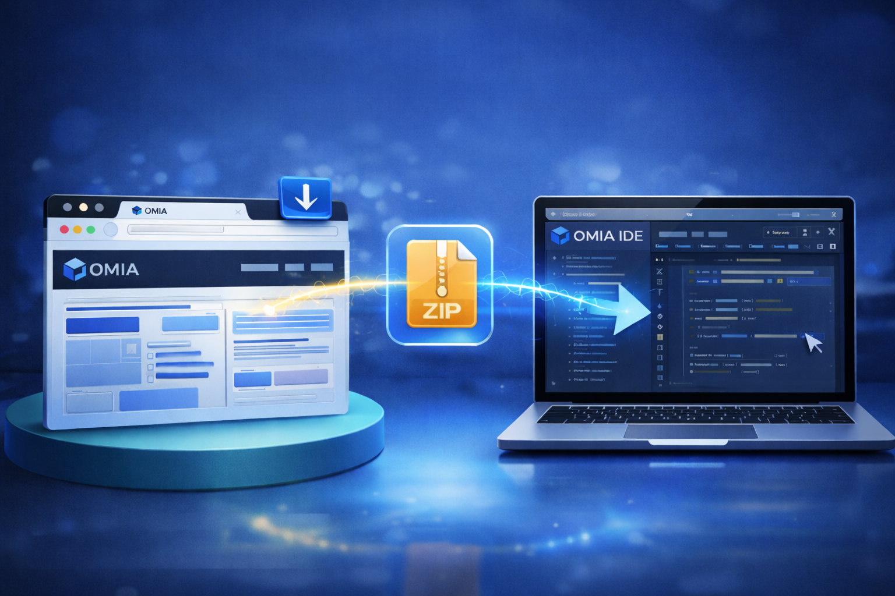
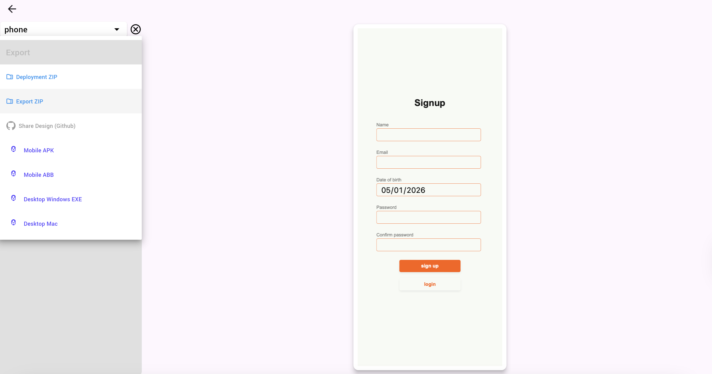

Fast Track
Use Export ZIP in preview, import the ZIP on the destination machine, and continue from the same functional design state.
To move a functional design between machines, use Export ZIP on the current project and import that same file on the target setup. The flow is simple, explicit, and built for continuing work without rebuilding the project by hand.
Export from preview
Open the project on the source machine, go to its preview, open the dropdown menu, and choose Export ZIP. When the ZIP is ready, save it locally. That exported file is the handoff package you will move to the next machine.

Import on the destination setup
On the destination machine, open OMIA Studio and go to the dashboard. Click the large plus button, choose Import ZIP, and select the exported ZIP. OMIA Studio will bring the project into the local workspace so you can continue from that saved state.

What carries over
After the import completes, the project opens inside OMIA Studio ready for continued work. You are reopening the latest exported project state, not starting from scratch.

- Your latest functional design layout comes over into the destination workspace.
- The project files move with the export so you can continue from the same working state.
- The imported project is ready for preview, iteration, and further development in the new environment.
Keep the transfer explicit
Projects do not automatically appear on another machine or in another app install just because you sign in with the same account. If you are moving to a new laptop or handing the project to another workstation, create a fresh ZIP with Export ZIP after your latest meaningful changes and import that file on the target setup.